installing insulation
2021.07.15
North Saanich BC, Canada
Click below dates for more recent updates:
We have largely avoided winter these past 5 years, having instead chosen to follow summer around the Pacific. This was a good plan, we think. But we have since returned to Canada, a place not known for its tropical weather.
In the winter of 2020-2021, we woke up one morning with 2 feet of snow on deck. "Ah," we thought, "it snows here too." We cannot tell you why we thought there couldn't be snow here. We stayed in Victoria, the southernmost place in British Columbia, but apparently not south enough.
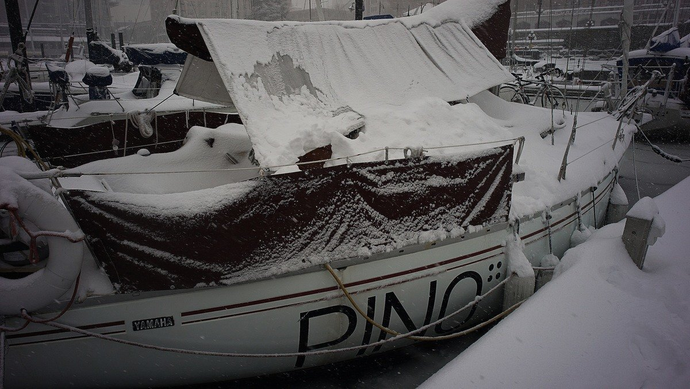Armed with a new understanding of local weather, and two electric heaters, we kept Pino warm, but certain areas of the boat suffered because of condensation. While in New Zealand we insulated the v-berth, badly. Shoddy, shoddy work. Our walls resembled a mountain face after a big rain. We had used camping mats made of 1 cm EVA foam with a foil backing. We had glued it with a spray adhesive. It helped a little, but the glue was not applied correctly, and we had not cleaned the wall underneath it well enough either. We also did the work during a time when the weather was cold, and damp.
This year we are determined not to have a repeat of the winter of 2020-2021.
We installed a woodstove in the main saloon. Wood stoves give off good, dry heat which should help keep the boat warm when we are off-grid. We also made curtains for our windows. Pino's windows are very large, and a significant source of heat loss. Next on our list is insulating important and accessible parts of the boat.
Insulating a boat while it still has walls, floors and ceilings is an impossible job. We are not aiming for perfection, because perfection involves tearing the boat to pieces, but we will do our best to deal with exposed surfaces. In all though, the very best way to avoid condensation is ventilation. When installing insulation, do it in dry warm weather. Trying to apply insulation(glue, especially) in a moist environment is a sure way to fail.
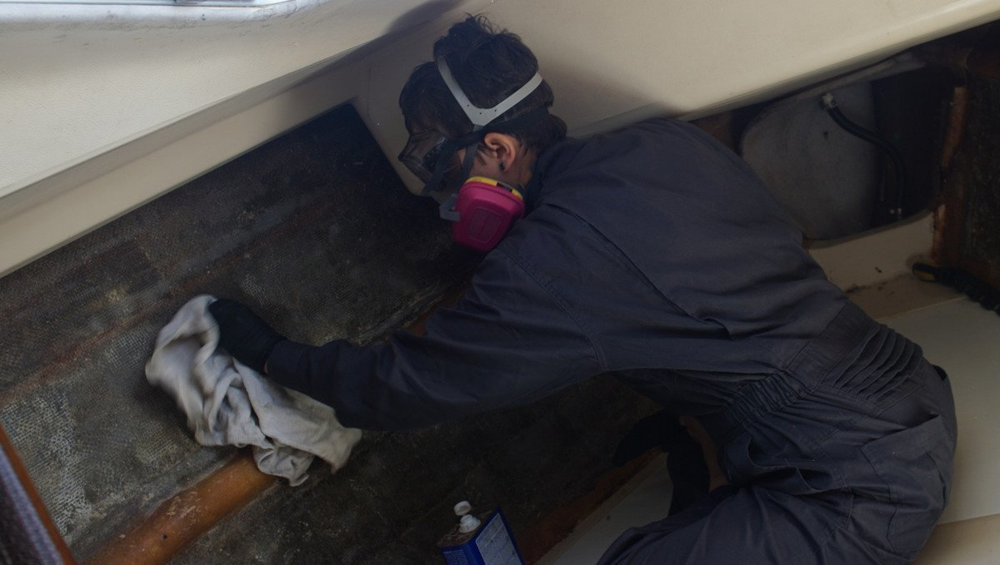We tore the old insulation off, and found that some came away with little mess or effort—a bad sign that our first installation was indeed shoddy. We scraped off the glue, and cleaned the rest off with acetone. We instead re-used the sheets of EVA foam to insulate our lockers.
Then, we epoxied a series of wooden strips to create a scaffolding along the hull. We found this wood in the workshop of the local sailing club. People leave scrap wood from projects, good wood, and now it is ours. We plan to paint the wood with a thin layer of epoxy, so that mold can't reach our precious material. We had to make a lot of thickened epoxy to fill gaps between the wooden strips and the hull.
Our boat has a bulge in the center of the wall, running from bow to stern(to reinforce the hull). We removed the trim that was there previously, and plan to re-use it after adding the new upholstery. The bulge would be useful, we could use it to 'frame' the insulation.
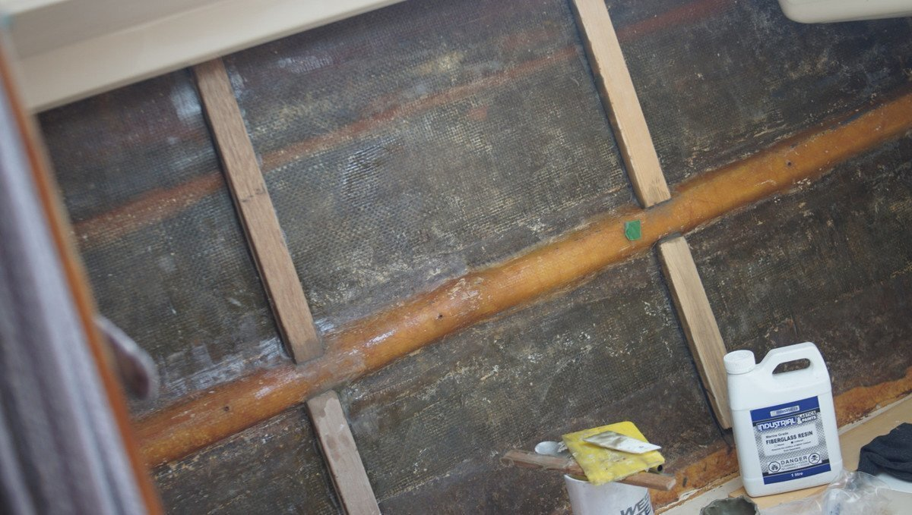For this project we alternated between fancy, and so-so resin. One dried quickly, the other slowly, and its smell lingered in the cabin for days and days. West Systems resin is not cheap, but it is very good, and we regret trying the cheaper variety.
Next, came time to choose our insulation material. We chose Foamular, or XPS(extruded polystyrene). Foamular is pink, with a line drawing of the pink panther overtop.
2022 UPDATE — some studies have shown that contrary to what XPS manufacturers report, XPS can lose its effectiveness over time (due to off-gassing) and can retain moisture if exposed for long periods. When we researched insulation materials we relied on the information relayed by XPS manufacturers, but it is difficult to make decisions or to make product comparisons when companies understate the water permeability or overall performance of their products. We had not seen this prior to installing ours in 2021, despite having done plenty of research. At the time, using EPS as insulation was discouraged from a variety of sources, but it is possible that they too relied on false reportings from manufacturers, or companies with conflicts of interest. We will not be ripping out the XPS, we believe that it it making a difference (no more condensation in that space what-so-ever, still true in Nov 2023), but we will use it as a case study for the use of XPS on a boat. If we can get our hands on a moisture meter we'll be able to test this further, and we'll share our findings. Do your research, use XPS on your boat at your own risk. Thank you to Lease for telling us about this bit of information. — End of update.
XPS is easy to find locally, this, its price, and high R-value per thickness is what inspired our choice. It has a R-value of 5 per 2.54 cm(1 inch), and it outperforms most other types of insulation, like Polyiso. Unlike Polyiso, XPS is less stiff and can follow curves better (depending on chosen thickness). The only thickness available to us was 2.54 cm (1 in), thicker than we wanted, but we think we can make it work. It might shrink the v-berth a bit, but we don't think this bothersome. Warmth is preferable to width(ha). We'll likely layer a thin material overtop, so the wall won't be much thicker than this.
The work
We measured each section we would have to cover with the foam boards, marked them up and cut shallow lines across its length and snapped the pieces right off.
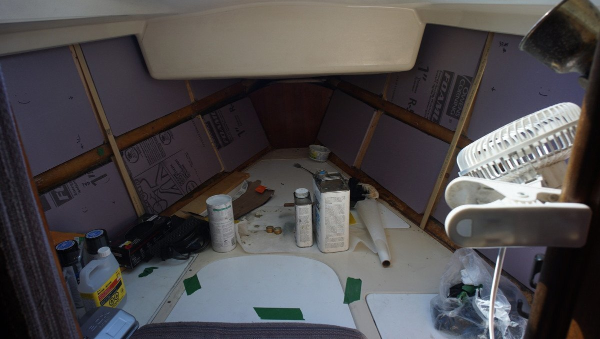Next step, is to affix the cut pieces to the wall. We bought some polyurethane adhesive (formula for foam boards), applied it to the back of the board and pressed it on firmly. We used mechanical support to press the board onto the wall while drying. We only have so many pieces of wood for support, so we are applying 3 at a time.
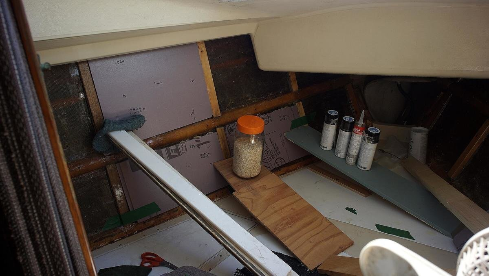It took a few days to get all of the boards on.
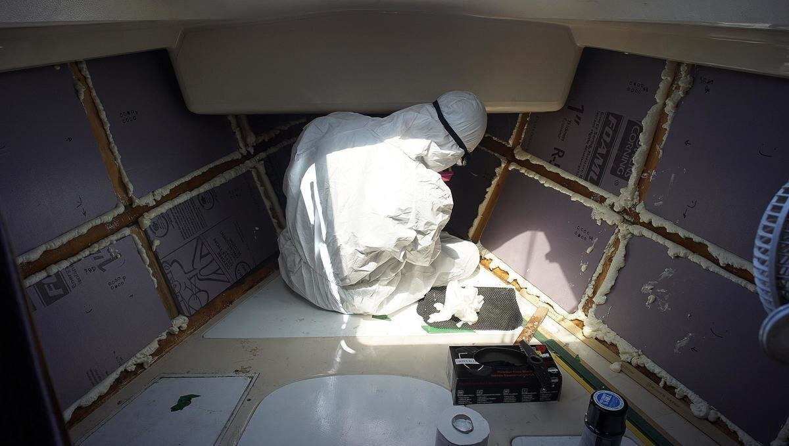Next step is to add foam spray to seal cracks between the scaffolding and foam boards. It is quite easy to use, but it makes a mess. At least, it is easy to trim. We posted the above picture on social media, and people made fun of our Chernobyl-esque accoutrement. It isn't nuclear waste, but it generates isocyanate vapors and aerosols, a powerful irritant. It isn't good to breathe SPF during application, or to let it get on your skin(causes marked inflammation), and hey, we like not having asthma. Isocyanates can also sensitize you, making you subject to severe asthma attacks if you are exposed again. Always ventilate the space when applying SPF, and let it air out for a full 24 hours.

Our friends Rik and Kay drove us to Home Depot to pick up some carpeting. We picked up two 1.82 m(6 ft) by 2.43 m(7 ft) rolls. We plan to use that as finish for the walls. We thought of using vinyl flooring, but carpet is cheaper, and may provide more insulation. The carpet is for outdoor uses, it is 100% polyester, water pearls on it, and apparently doesn't rot. Also, it's easy to cut and isn't too heavy.
2023 UPDATE — We've since talked to people who have tried carpet on their walls and that have had to rip it out, saying that it can hold salt, grime and mold. We don't know what kind of carpetting were installed on their boats(the carpet was often installed by former owners). It's possible it wasn't outdoor, mildew-proof carpet. In all, be careful when choosing carpet as a way to cover-up insulation. Carpet is commonly used on boats as headerliner for boats cabins(see HullBlanket Headliner Carpet), and we haven't had trouble with our installation(so far), but it may be because of our chosen carpet material, and the fact that it was installed in a dry, well-ventilated open space(not a locker). We chose to install carpet because friends of ours did it and reported no issues with theirs. Keep this in mind if choosing to install carpet like us.— End of update.
The vinyl flooring was nice, but would add too much weight. The best choice would be wood, but we couldn't find a good local source (the wall coverings in our quarter berth and in the main saloon are wood).
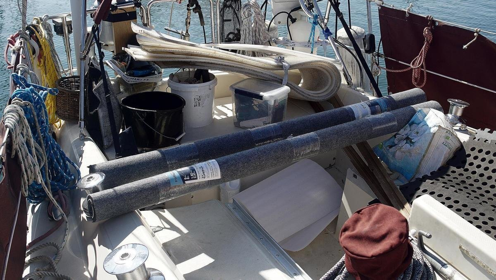We trimmed the excess spray foam, and painted over with an acrylic latex paint. The foam isn't as waterproof when cut, so sealing it with something is necessary. Leaving the foam uncut would have been better, but then we would have very, very lumpy walls.
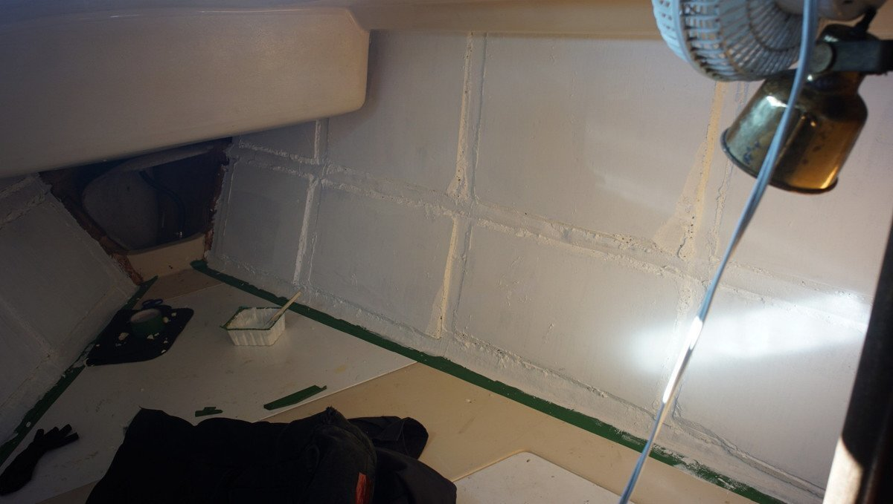We cut the carpet to match the shape of the wall, and laid on some outdoor carpet adhesive(Home Bond). We tooled adhesive on the whole surface, and pressed on the carpet.
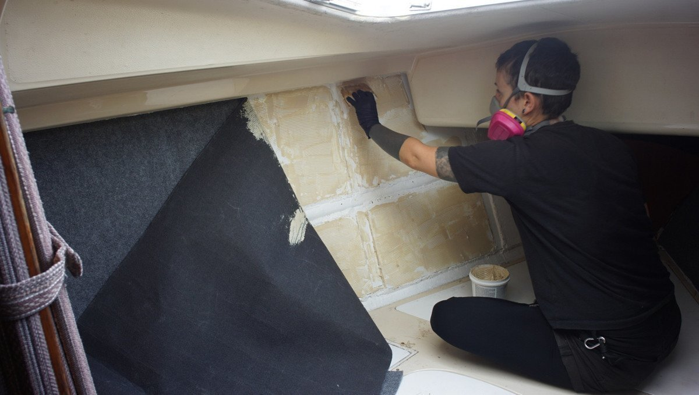We also added the trim back on top, fixed on the fibreglass bulge lining the space. It looks amazing! We're so happy! The wall wasn't perfectly smooth prior to applying the carpet, but it barely shows.
The interlocking foam pads were there prior to the start of this project.
In the end, we didn't really use the scaffolding we'd built. At the time, we thought we'd use it to mount vinyl walls, but then we chose to lay on carpet. In any case, the scaffolding reinforces the wall, and if ever we decide to add shelving then we have something to use as backing.
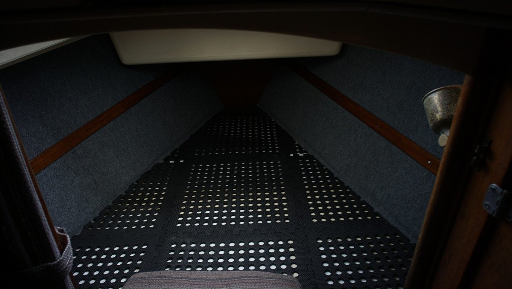 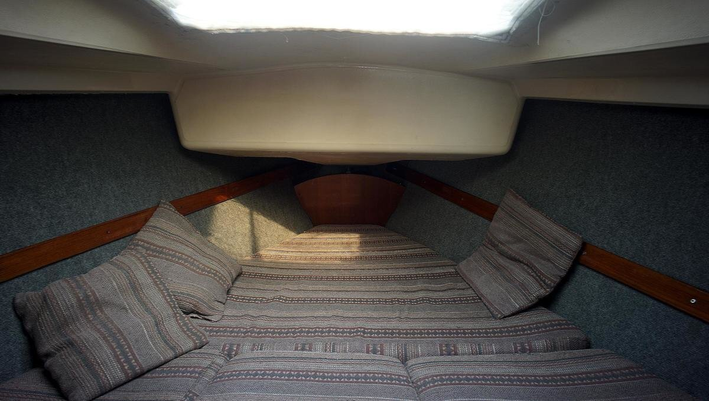2020.10.20
So far, so good. No condensation under the cushions in the v-berth. It isn't as cold as it's going to be out there, but this time last year we had drippy walls and wet cushions.
2023.11.20
The space continues to be dry, the carpet is immaculate.
2023.04.03
Victoria BC, Canada
A few months ago when we did an electrical refit of Pino, we removed the cabinet in the head to get to some wires hidden (and trapped) behind it. In the end, we couldn't re-use those same paths but instead found new routes. Either way, removing the cabinet was still necessary.
Pino's walls are covered by textured vinyl. The vinyl is old, and has parted from the wall in many places (due to moisture). We ripped out the vinyl, and decided to try and insulate this space like we did for the v-berth, and for the closet (opposite of the head, we didn't document it but we did it last year, using some left-over XPS).

The process for adding insulation is the same as above, except that we instead used EPS(Expanded Polystyrene Foam Insulation Boards). EPS is more water permeable than XPS, but it also dries faster. Using different materials is a good way to experiment, to find out what works best. A boat environment is different than a house, but there aren't a ton of lightweight and inexpensive options for boats.
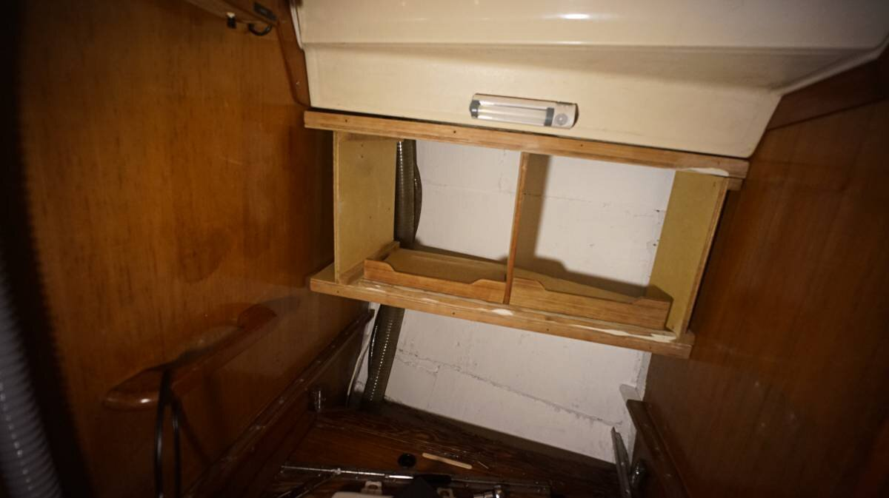The back of the cabinet suffered a bit of rot, so we'll have to replace that, but the rest of the cabinet is fine.
The left side of the cabinet used to house a 125V outlet, that we've since removed (area was too moisture-prone, and we weren't using it that much). Instead, we'll enlargen the hole and use that space for storage, and when emptied it'll provide access to the water pipe for the freshwater tank (and breather pipe) concealed behind it.
Below is the cabinet put back into the space. We cut a new sheet of wood for the back panel, and used a cracked bamboo cutting board we found in the marina trash to make a shelf for the right side of the cabinet (there was no shelf there before). We glued the two halves of the cutting board together.
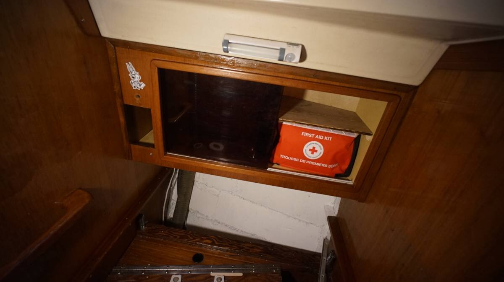It is nice to have our cabinet back in its space. The bits and pieces have been laying around the cockpit since last December! The cabinet returning to its spot in the head also means that the cockpit is no longer a construction site! It doubled as a wood-working area all winter long! This concludes the head insulation project!
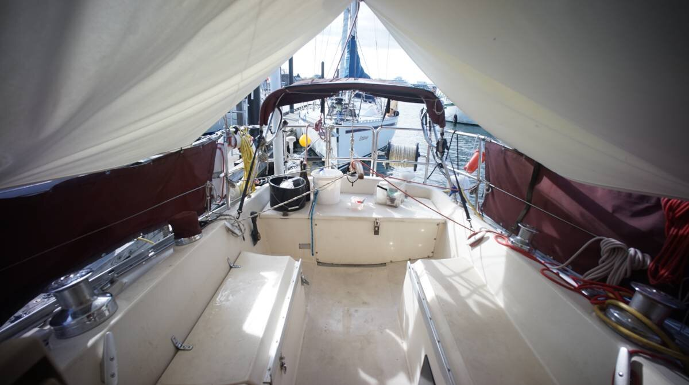